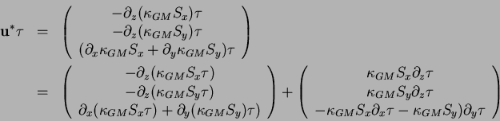
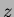

Next: Variable
Up: GM parameterization
Previous: GM parameterization
Griffies notes that the discretisation of bolus velocities involves
multiple layers of differencing and interpolation that potentially
lead to noisy fields and computational modes. He pointed out that the
bolus flux can be re-written in terms of a non-divergent flux and a
skew-flux:

The first vector is non-divergent and thus has no effect on the tracer
field and can be dropped. The remaining flux can be written:
where
is an anti-symmetric tensor.
This formulation of the GM parameterization involves fewer derivatives
than the original and also involves only terms that already appear in
the Redi mixing scheme. Indeed, a somewhat fortunate cancellation
becomes apparent when we use the GM parameterization in conjunction
with the Redi isoneutral mixing scheme:
In the instance that
 then
then
which differs from the variable laplacian diffusion tensor by only
two non-zero elements in the -row.
Next: Variable
Up: GM parameterization
Previous: GM parameterization
chris
2001-05-20